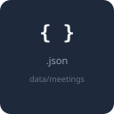

Presentation tier


SVG files live in this folder. Use in Word/PowerPoint via Insert → Pictures, or embed in draw.io.


Pipeline modules (ASR, prosody, etc.) are code — optional: add faster-whisper / Librosa icons from Devicon in the same way.
